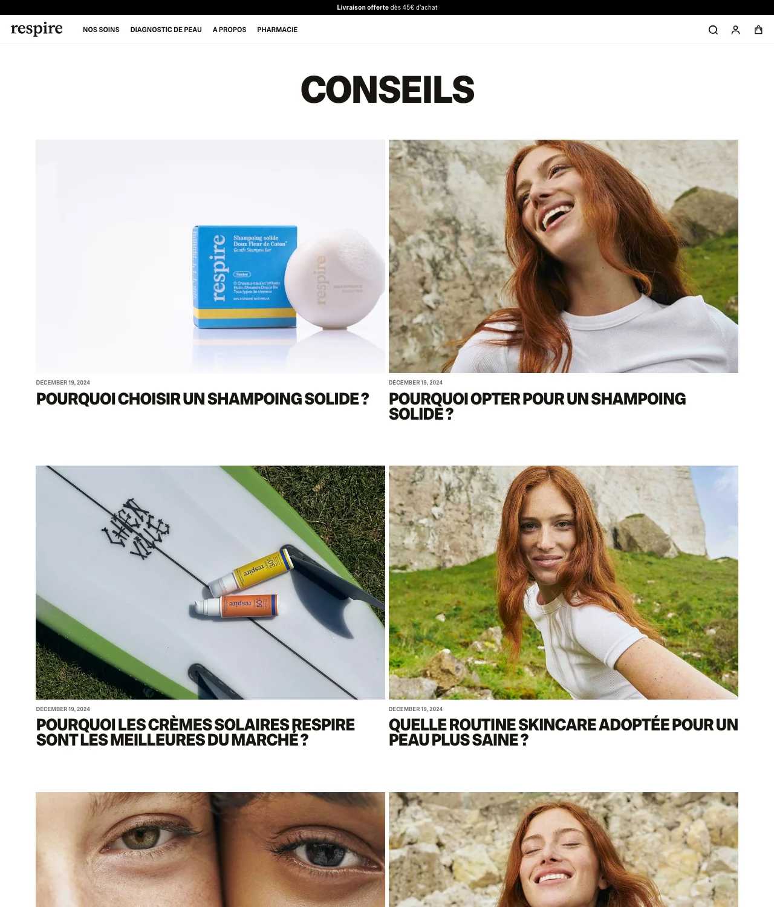
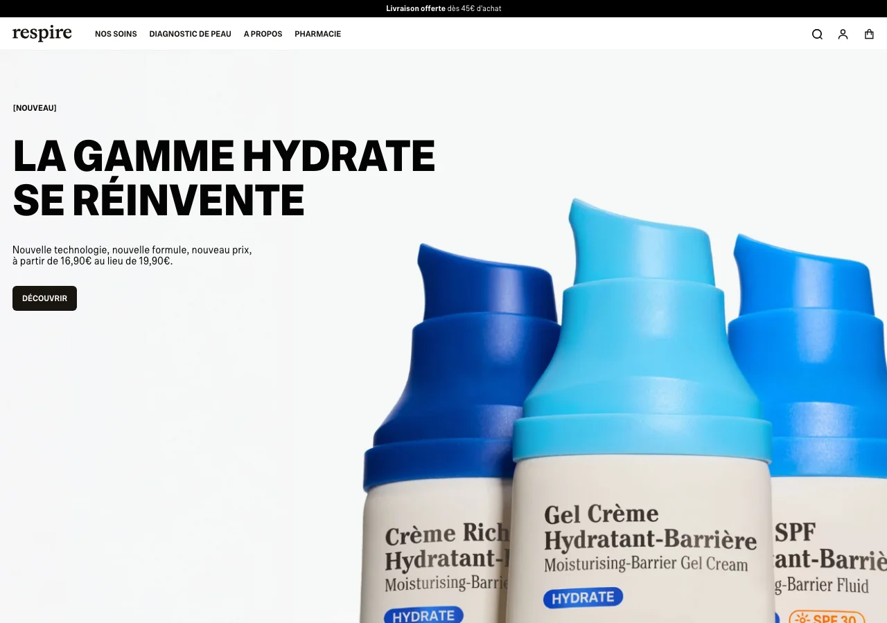

Respire
Audit de présence digitale
Le prix d'un repositionnement. De la marque de déodorant naturel à la marque de dermocosmétique : audit de présence digitale et plan d'action à 90 jours.

Contexte
Livrable : audit Instagram · site web · SEO · analyse concurrentielle, puis proposition stratégique.
Périmètre concurrentiel : Typology · 900.care · Les Petits Prödiges.
Nature : projet de portfolio — recherche d'alternance en marketing digital.
Problème identifié
Respire n'a pas un problème de contenu : la marque a un problème de cohérence entre la notoriété qu'elle a acquise et la catégorie qu'elle revendique aujourd'hui.
Trois constats structurent cet audit : le repositionnement est affiché mais pas encore raconté ; le dispositif de contenu éditorial est à l'arrêt depuis fin 2024 ; les actifs de preuve les plus forts ne sont pas mis en circulation.
Méthodologie
Observation manuelle des pages publiques (site, profils Instagram, pages de résultats), lecture de la presse et des rapports de repères sectoriels cités en section 14, rédaction et mise en page HTML/CSS.
Les éléments sont distingués par trois étiquettes : OBSERVÉ, ESTIMATION et SOURCÉ.
Analyse
Constat 1 — Le repositionnement est affiché mais pas encore raconté. La marque a changé de promesse plus vite qu'elle n'a construit la preuve de cette promesse.
Constat 2 — Le dispositif de contenu éditorial est à l'arrêt depuis fin 2024. Le contenu qui devrait porter la crédibilité dermatologique du nouveau positionnement travaille encore pour l'ancien.
Constat 3 — Les actifs de preuve les plus forts ne sont pas mis en circulation. Les avis clients, l'outil de diagnostic de peau et le compte fondatrice ne sont pas structurés en format éditorial récurrent.


Recommandation stratégique
Faire de la preuve — et non du produit — le pilier dominant du contenu (35 % du volume), en la déclinant sous un format unique et reconnaissable : la démonstration à visage humain.
Reprendre l'actif fondatrice et l'actif avis clients pour construire une série récurrente de Reels « une personne, un problème de peau, un protocole, un résultat ».
Livrables
- Audit Instagram
- Audit site web & parcours de conversion
- Audit SEO & contenu éditorial
- Analyse concurrentielle & tableau comparatif
- Stratégie : piliers éditoriaux & formats
- Calendrier éditorial — 4 semaines
- Roadmap à 90 jours
KPI et mesure
Les données internes (statistiques, chiffre d'affaires, taux d'engagement mesuré, coûts d'acquisition) n'ont pas été consultées. Toute appréciation quantitative non sourcée est signalée comme estimation qualitative.
Limites du projet
Pas d'accès au flux Instagram post par post, pas d'accès aux statistiques du site, pas d'outil SEO payant. Les conclusions SEO reposent sur l'observation directe de la structure éditoriale du site et sur la lecture de pages de résultats.